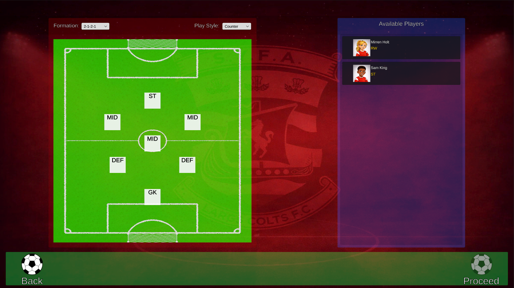
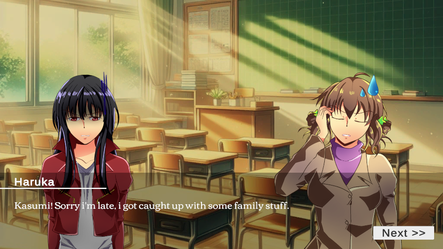
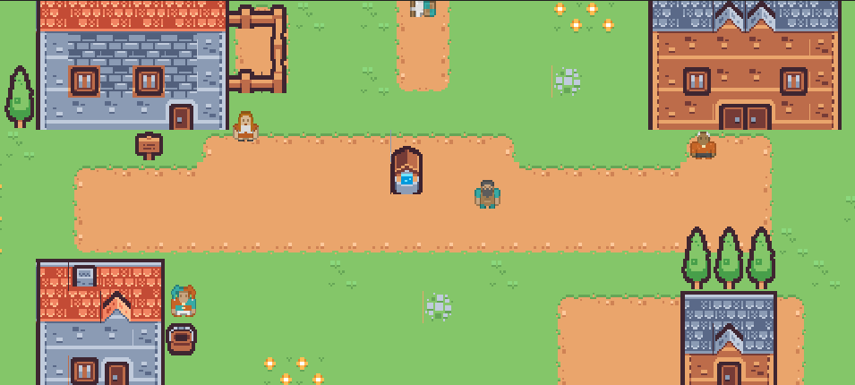
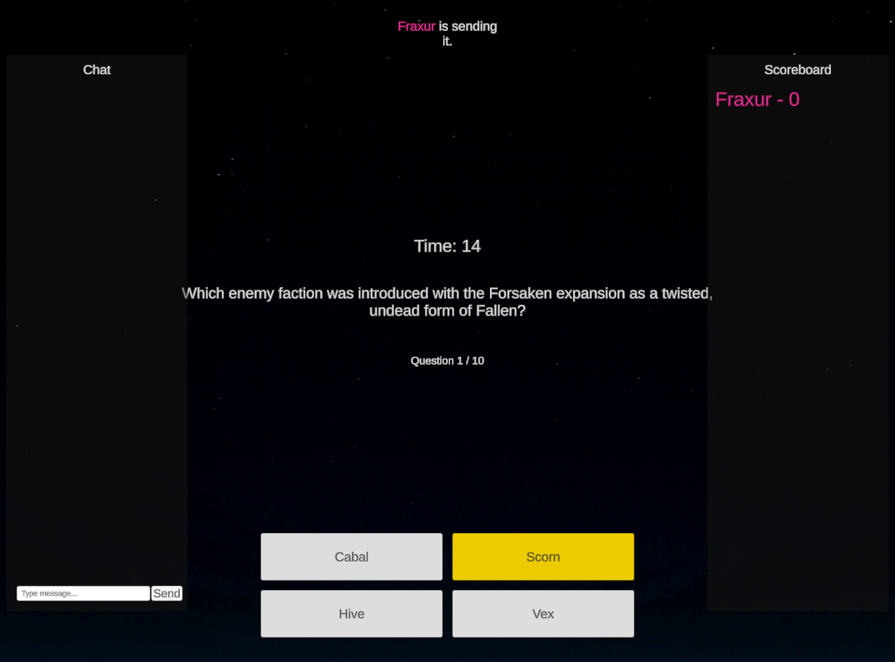
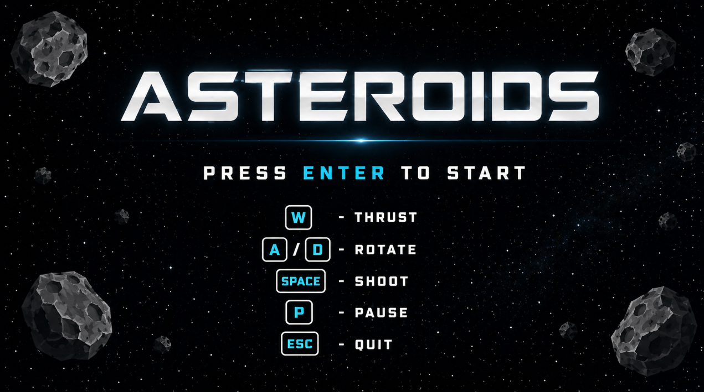

Ascension
A group project and my main showcase piece, focused on gameplay systems, system integration, debugging, and player experience, with a strong emphasis on polish and presentation.
View ProjectGameplay Programmer & Designer
I build gameplay systems and experiences with a strong focus on player experience, presentation, and overall quality.
I take pride in creating work that feels complete, polished, and considered, aiming to deliver experiences I’m genuinely confident in presenting.
I’m a gameplay-focused developer and designer with experience building systems in Unity, alongside exploring narrative design through smaller projects.
My work ranges from system-driven gameplay, such as match simulation and mechanics design, to narrative-focused experiences like visual novel concepts and interactive storytelling.
I place a strong emphasis on player experience, presentation, and overall quality, aiming to ensure that anything I create feels considered, polished, and complete. I’m always looking to improve how my work plays, feels, and is presented, both technically and creatively.
Through my projects, I’ve developed an understanding of how design decisions and technical implementation come together to shape the player’s experience.
A group project and my main showcase piece, focused on gameplay systems, system integration, debugging, and player experience, with a strong emphasis on polish and presentation.
View Project
A solo-developed 2D platformer vertical slice built in Unity, centred around a clear gameplay loop of exploration, progression, and environmental challenge.
View Project
Work in Progress
A football management simulation project focused on match logic, data-driven systems, and generating believable outcomes based on player attributes and team dynamics.

Work in Progress
A narrative-focused visual novel concept exploring atmosphere, dialogue, and player-driven discovery within a subtle supernatural setting.
A short interactive narrative prototype exploring branching dialogue, player choice, and consequence within a dark fantasy setting.
Play on Itch.io

A selection of smaller projects exploring mechanics, UI systems, interaction, and gameplay structure across different styles and scopes.

A C++ recreation of the classic Asteroids arcade game, developed as part of my Games Programming coursework. Focused on implementing core systems including the game loop, object movement, input handling, and collision detection.